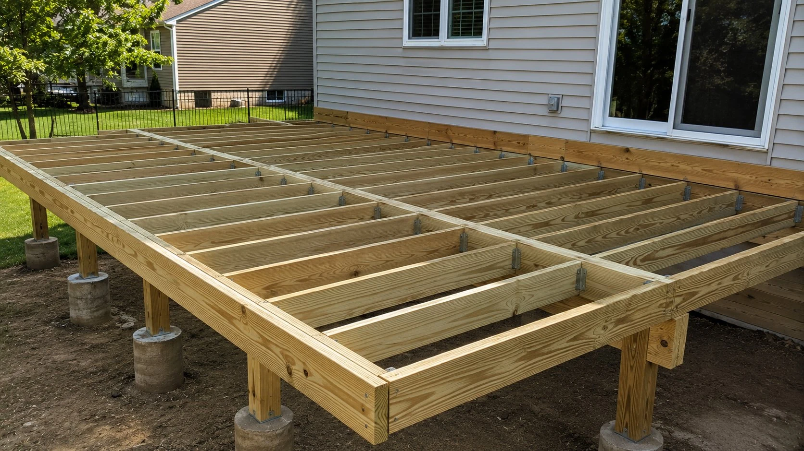

Hebron is a smaller community in southern Licking County with a tight mix of older in-town lots and newer residential development along the corridors toward Newark and Kirkersville. Deck projects here range from simple pressure-treated builds for older homes to composite deck and pergola packages for the newer construction.
Free Estimate — Hebron, OH
(740) 527-0222Serving Hebron and surrounding communities
Request Site VisitHebron is a smaller community in southern Licking County with a tight mix of older in-town lots and newer residential development along the corridors toward Newark and Kirkersville. Deck projects here range from simple pressure-treated builds for older homes to composite deck and pergola packages for the newer construction.
Hebron homeowners often ask about building a deck that will still be solid in 20 years without a lot of maintenance. That's the composite conversation — and we walk through it at every free estimate we do in Hebron.
We handle the full permit process for Hebron — application, inspection scheduling, and final sign-off. This is included in every project, not an add-on fee.
Get Free Estimate in Hebron
Trex, TimberTech, and Fiberon composite decks — zero maintenance, 25-year warranties. Built properly from footings up.
View Composite Decks →Classic wood deck construction. Budget-friendly, durable, stainable — correctly sized joists and hardware, built to code.
View Wood Decks →Rotted boards, failing railings, soft spots — we fix specific problems without tearing out a sound deck structure.
View Deck Repair →Full tear-out and rebuild. We assess your structure honestly and give you a real repair vs. replace recommendation.
View Deck Replacement →Attached and freestanding pergolas in cedar, composite, and aluminum. Add shade and definition to your outdoor space.
View Pergolas →Multi-level layouts, cable railing, built-in seating, outdoor kitchens. Designed around your specific property.
View Custom Decks →Common questions from Hebron homeowners about deck projects.
We'll come to your Hebron property and give you honest written pricing on new builds, repair, or replacement. No obligation.
(740) 527-0222Mon–Fri 7am–6pm | Sat 8am–2pm
Tell us about your project and we'll schedule a free visit.
We respond within one business day. Serving Hebron and all of Licking County.